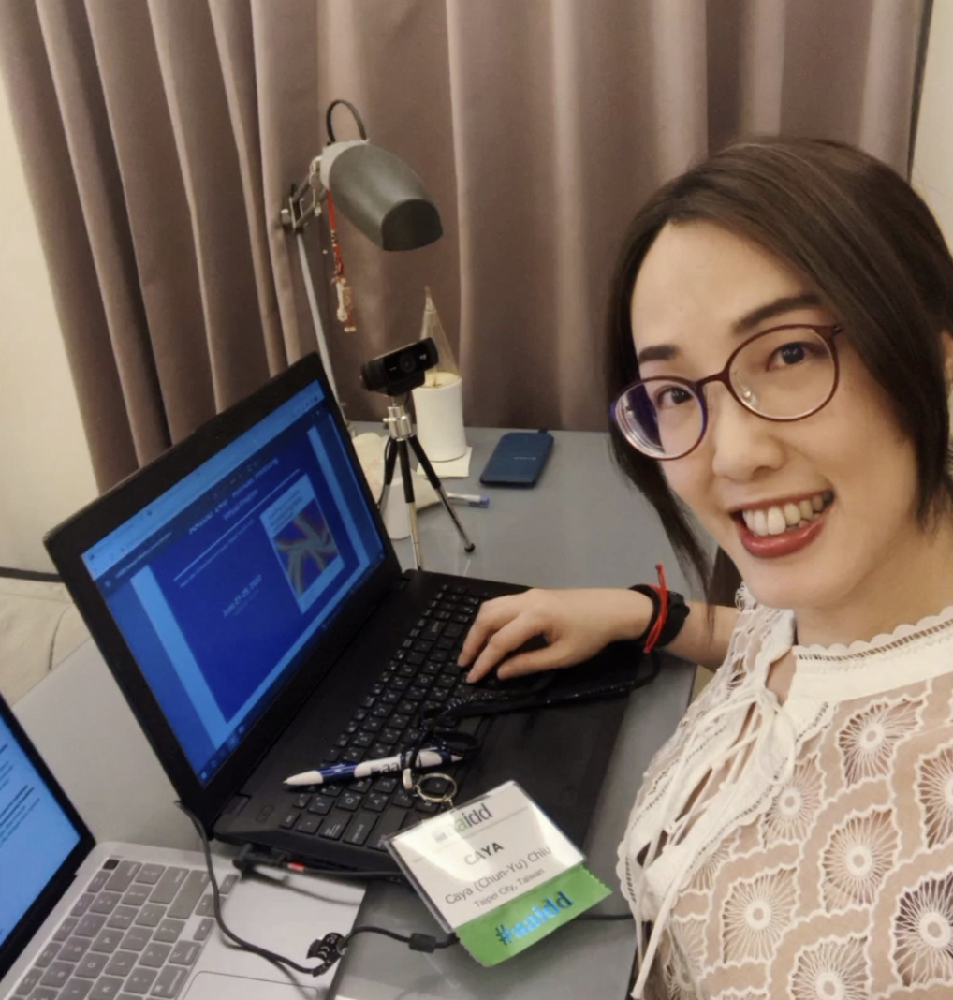

歡迎！

嗨！我是結合特教專業與照顧者日常的社會科學研究者。
目前於國立臺灣師範大學擔任副教授。身為智能障礙者的手足，我的生命經驗與學術訓練相互交織，驅使我持續為智能與發展障礙者家庭進行研究與倡議。
跨國的學術交流讓我結交了世界各地的朋友，享受跨時區過節的樂趣！做為照顧者，我對自己練出的二頭肌感到自豪（但也極力推薦英國製移位滑布）。
脫下學術外衣後，我喜歡彈琴、攝影、閱讀、當個驕傲的阿宅；最近喜歡上了攀岩確保(雖然很弱）。
無論你是對特教研究有熱忱的學生、想聊聊跨國學術合作的同儕，還是單純想交流障礙x攀岩的朋友，都歡迎來聊聊！
Hello! I am a special educator, a social science researcher, and a proud sibling of an individual with an intellectual disability.
Currently an associate professor at National Taiwan Normal University, my lived experiences and academic training naturally intertwine, fueling my passion to research and advocate for families of individuals with intellectual and developmental disabilities (IDD).
International research collaborations connect me with friends globally, letting me celebrate holidays across multiple time zones! I’m proud of my caregiving-built biceps (though I highly recommend a slide sheet for transferring my brother).
Off the clock, you can find me playing the piano, taking photos, reading, top-rope belaying, or light jogging.
更多相關網站
- 個人簡介：學經歷、國際學術獎項、研究專案
- 科普：精簡版研究報告、科普文章、Podcast、節目訪談、專題演講
- 著作：期刊文獻、研討會論文、書籍章節、翻譯作品
- 指導論文/口試：擔任指導教授、口試委員之論文
- 其他學術服務：國際性學術服務、校內外學術服務、研究諮詢
任職經歷 Academic Appointment
-
2022/02/01 - Present
國立臺灣師範大學特殊教育系副教授
National Taiwan Normal University / Department of Special Education
Associate Professor -
2016/08/01 - 2022/01/31
國立臺灣師範大學特殊教育系助理教授
National Taiwan Normal University / Department of Special Education
Assitant Professor -
2014/02/01 - 2016/07/31
國立台北教育大學特殊教育系助理教授
National Taipei University of Education / Department of Special Education
Assistant Professor -
2013/06/01 - 2014/02/01
University of Kansas / Beach Center on Disability
Post-doctoral fellowship
學歷 Academic Degree
-
2009/08/01 - 2013/05/31
University of Kansas, Lawrence, KS, U.S.A.
Major: Special Education (Family and Policy) | Minor: Research
Ph.D. - Family Needs and Family Quality of Life for Taiwanese Families of Children with Intellectual Disability and Developmental Delay -
2007/08/01 - 2009/05/31
Vanderbilt University, Nashville, TN, U.S.A.
Major: Special Education (Low Incidence Disabilities)
M.Ed. - Web-based Survey of Taiwanese and American Adult Siblings of Persons with Disabilities -
2001/09/01 - 2005/06/30
National Taiwan Normal University
Major: Special Education (Severe and Multiple Disabilities)
B.A.
國際學術獎項 / Awards
- 2025: Fulbright Senior Scholar Fellowship
- 2019: American Association on Intellectual and Developmental Disabilities International Award
- 2019: American Association on Intellectual and Developmental Disabilities Fellowship of AAIDD
- 2015: Jay Turnbull Fellowship
- 2012 - 2013: Tien-Chan Charity Foundation Dissertation Grant
- 2009 - 2013: Borchardt Scholarship, Grace M Phinney Scholarship, KU School of Education Achievement Award
- 2007 - 2009: Dean’s Selection Scholarship, Peabody College at Vanderbilt University
研究專案 / Research Projects
Principal Investigator / 計畫主持人
- 2026/07/01 - Present: NSTC: A study of Coevolution for Definition, System, and Life Stories of Intellectual Disability. 科技部115年度優秀年輕學者研究計畫(個別型)NSTC 115-2628-H-003 -004 -MY2 從決策不透明到信任治理：以人機協作重構特殊教育鑑定中的障礙正義
- 2025/02/15 - 2025/08/15: Fulbright: Painting the Future Together: Exploring Experiences of Asian Immigrant Families of Young Adults with Intellectual and Developmental Disabilities
- 2022/08/01 - Present: NSTC: A study of Coevolution for Definition, System, and Life Stories of Intellectual Disability. 科技部112年度專題研究計畫案 NSTC112-2410-H003-092-MY3 名稱的故事：智能障礙定義、制度、生命故事共同演化之研究
- 2021/08/01 - 2024/07/31: NSTC: Building a Balanced Future: Effectiveness of a Hybrid Future Planning Support Program for Families of Individuals with Intellectual and Developmental Disabilities. 科技部110年度專題研究計畫案 MOST110-2410-H003-068-MY2 未老籌謀：當面加線上混合形式智能與發展障礙家庭未來規劃支持方案之成效研究
- 2020/08/01 - 2022/07/31: NSTC: Handing over the Baton: Perspectives of Sibling Relationship, Caregiving Responsibility and Future Planning from Different Family Members of Individuals with Intellectual and Developmental Disabilities. 科技部110年度專題研究計畫案 MOST109-2410-H003-043-SSS 交棒:從不同智能與發展障礙者家庭成員觀點看手足關係、照顧任務及未來規劃
- 2018/08/01 - 2020/01/31: NSTC: Time Keepers: Generational Similarities/ Differences among Siblings Caregivers of Individuals with Disabilities. 科技部鼓勵女性從事科學及技術研究專案計畫(個別型) MOST 107-2635-H-003-001 -跨越時間的守護者: 擔負障礙者照顧責任的手足生命階段與世代間異同探究
- 2019/07/01 - 2020/08/31: Anfield: Play matters: exploring the relationship between inclusive education and play (Joint project with HKU School of Professional and Continuing Education and University of Leeds)
- 2019/01/01 - 2019/12/31: MoHW: Sibling Empowerment: Developing Workshop for Adults Siblings of Individuals with Intellectual and Developmental Disabilities. 公益彩券回饋金補助專案1081K1009看見高齡社會中障礙家庭支持工作的新取向—機構身心障礙者之手足團體培力計畫(育成基金會)
- 2017/01/01 - 2019/12/31: Social sciences and humanity research Council, Canada: De l'intervention comportementale intensive précoce à l'école : évaluation de la qualité de la trajectoire de services chez les familles d'enfant ayant un trouble du spectre (Joint project with University of Montreal in Quebec, Queens University, Ontario)
- 2017/08/01 - 2018/10/31: NTNU: Exploring Needs and Support Strategies for Schoolage Special Siblings of Children with Intellectual Disability/Autism. 國立臺灣師範大學新進教師之專題研究補助106031003 隱形的特殊需求:智能障礙與自閉症者之在學特殊手足需求與支持策略探究
- 2017/01/01 - 2018/08/01: Exploring the ‘state of play’ for disabled children in Hong Kong and Taiwan (Joint project with HKU School of Professional and Continuing Education and University of Leeds)n
- 2014/10/01 - 2016/12/31: CRPD and Quality of Life Indicator Delphi-study
- 2010/03/01 - 2016/08/31: Family Needs Assessment Scale Development
- 2010/01/01 - 2012/06/30: Early Years online module development
- 2009/09/01 - 2010/05/31: CONNECT: A web-based professional development resources
Project Co-Principal Investigator / 協同主持人
- 2019/07/08 - 2020/08/31: Anfield補助計畫Play matters: exploring the relationship between inclusive education and play (與香港大學School of Professional and Continuing Education及University of Leeds, UK合作計畫)
- 2017/01/01 - 2019/12/31: Social sciences and humanity research Council, Canada補助專案 De l'intervention comportementale intensive précoce à l'école : évaluation de la qualité de la trajectoire de services chez les familles d'enfant ayant un trouble du spectre de l'autisme Université du Québec à Montréal (與University of Montreal in Quebec, Queens University, Ontario合作計畫)
- 2017/01/01 - 2018/08/01: Exploring the ‘state of play’ for disabled children in Hong Kong and Taiwan (與香港大學School of Professional and Continuing Education及University of Leeds, UK合作計畫)
精簡版研究報告 (Research Briefs)
科普文章 / Pop-Sci Article
- 邱春瑜(2024)。當你凝視深淵：「怪胎秀」（Freakshow）與「健全主義」的對話 。障礙研究五四三。
- Chiu, C. (2021). Criteria for ID Now Available in Eight Additional Languages. AAIDD.
- Chiu, C. (2021). Criteria for Intellectual Disability in Translation. AAIDD.
- Caya, C. (2021, July). Mission of the Century. Leadership in IDD.
- Chiu, C., Strohm, K., & Arima, Y. (2020, Spring). Sibling Support Internationally: A Snapshot of Asia-Pacific Sibling Networks. ICI Peer-Reviewed Publications.
- Chiu, C. (2020, Jul 5). Developing global competency for an inclusive world. AAIDD SECP 2020 Curation.
- 邱春瑜、許朝富、游鯉綺(2019)。身心障礙，「微歧視」 。障礙研究五四三。
- 邱春瑜 (2019)。手足真心話。刊於台灣障礙者手足資訊網。
- Chiu, C. (2018, May 10). Rainbow Connection. SWIFT.
- 邱春瑜、周怡君、翁鈺旻、張恒豪(2017)。障礙體驗，體驗了什麼？。巷仔口社會學。
Podcast
訪談影片
- 2024/04 【育成社福基金會】障礙手足未來照顧規劃，手足要參與討論嗎。
- 2024/04 【育成社福基金會】從交往到婚姻，手足與伴侶經歷了什麼。
- 2020/11 【育成基金會】手足會客室ep1-肯納症(自閉症)者家人的翻轉人生。
- 2019/03 【返家專車】《特殊手足的真心話》。I Am Who I Am。
- 2016/11 老師專訪—邱春瑜教授。《兩個世界》OneWorld—身心障礙者權利講座。
- 2016/11 談歧視。《兩個世界》OneWorld—身心障礙者權利講座。
專題演講 / Selected Keynote Speech (-to be updated)
- Chiu, C. (August, 2026) The 7th European IASSIDD Congress Keynote Panel.
- Chiu, C. (July, 2019) 108年度教育部委託國立臺北教育大學辦理大專校院特殊教育專責單位輔導人員特殊教育研習。
- Chiu, C. (April, 2019) 天使心家長講座活動。手足真心話~您的恐懼與轉機。
- Chiu, C. (March, 2019) 2019心智障礙者手足議題國際研討會。舉手投足之間~特殊手足的真心話。
- Chiu, C. (Jan, 2019) 南湖國小彩虹幸福講堂。從特教老師的養成談起-想法大不同。
- Chiu, C. (Dec, 2018) 中原大學特殊教育學系特殊教育論題與趨勢。身心障礙者家庭研究與政策分析。
- Chiu, C. (Nov, 2018) 育成成人工作會報。手足情深？手足風險？手足無措？
- Chiu, C. (Oct, 2018) 2018東亞障礙研究論壇。樂在台灣：障礙兒童遊戲研究。
- Chiu, C. (Jan, 2017) Kongju National University BK21+ International Conference, Kongju, Korea. Supports for Post-secondary Students with Disabilities in Taiwan.
期刊文獻 / Journal Articles
- 韓采芳、邱春瑜、郭惠瑜(2026)我是誰?:成年智能障礙者對於智能障礙標籤態度及身份認同協商經驗之探究特殊教育研究學刊，51(2), 1-43。[TSSCI、通訊作者]
- 賴念華、魏大紘、、胡心慈、邱春瑜、李謹妏(2025)障礙者之父母在障礙者不同生命階段所感知到的親職壓力與支持程度－以生態系統的觀點。特殊教育研究學刊，50(2)，1-44 。https://doi.org/10.6172/BSE.202507_50(2).0001.[TSSCI]
- Chatenoud, C., Rivard, M., Millau, M., Aldersey, H., Chiu, C.-Y., Souissi, F., Magnan, C., & Mestari, Z. (2025). Family needs and service trajectory during the transition to school for children with autism. Families in Society, Advance online publication. https://doi.org/10.1177/10443894251329423 [SSCI]
- Rivard, M., Chatenoud, C., Chiu, C., Aldersey, H., Coulombe, P., Morin, M., ... & Magnan, C. (2024). From early behavioral intervention to school: A systematic evaluation of parents’ perspectives on the quality of the autism services during the transition to kindergarten. Journal of Autism and Developmental Disorders, 56(2), 615-632. https://doi.org/10.1007/s10803-024-06594-x[SSCI]
- 陳伯偉、邱春瑜、郭惠瑜、周月清(2023)。發展障礙研究倫理指引：支持障礙者參與研究。臺大社會工作學刊，特刊，1-42。
- Rivard, M., Chatenoud, C., Magnan, C., Beuchat, M., Mello, C., Aldersey, H. M., & Chiu, C. (2023). "I lost all the services offered to my child overnight": Families' experience of the interruption of early intervention services for autism during the Covid-19 pandemic in Quebec. Journal on Developmental Disabilities, 28(2), 1-27.
- Chiu, C. (2022). Bamboo sibs: Experiences of Taiwanese non-disabled siblings of adults with intellectual and developmental disabilities across caregiver lifestages. Journal of Developmental and Physical Disabilities, 34, 233–253. [SSCI]
- Lee, C., Hagiwara, M., Chiu, C., & Takishima, M. (2022). Caregiving and future planning perspectives of siblings of individuals with intellectual and developmental disabilities: Insights from South Korea, Japan and Taiwan. Journal of Applied Research in Intellectual Disabilities, 36(1), 50-57. [SSCI]
- 游以安，邱春瑜，林予安，張恒豪(2022)。身心障礙大學生新冠肺炎期間遠距學習調查：以臺灣為例。調查研究—方法與應用，49, 135-186。[TSSCI]
- 董怡寧，邱春瑜，游鯉綺，許朝富，周倩如（2022）。一句話惹惱障礙者：以污名溝通模型探究障礙微歧視話語之詮釋與回應。特殊教育研究學刊，47(2), 1-32。[TSSCI、通訊作者]
- Beckett, A. E., Encarnação, P., Chiu, C., & Ng, S. T. M. (2020). Play for disabled children in Taiwan and Hong Kong: parent perspectives. Journal of Disability Studies in Education, 1, 1-31.
- 劉益蓉、邱春瑜、張恒豪、柯秋雪(2020)。家成、業就？擔任特教老師的非障礙手足之邊界跨越經驗探究。特殊教育研究學刊，45(3)，29-51。[TSSCI、通訊作者]
- Wu, Y. C., Chen, P. Y., Tsai, S. P., Tsai, S. F., Chou, Y. C., & Chiu, C. (2019). The effects of the class-wide function-related intervention teams on behaviors of an elementary student with autism spectrum disorder in an inclusive classroom in Taiwan. International Journal of Developmental Disabilities, 65(5), 368-377. [SSCI、通訊作者]
- Francis, G. L., & Chiu, C. (2019). The way to ultimate wisdom: an exploratory qualitative study on Taiwanese students with disabilities attending college. International Journal of Developmental Disabilities, 1-12. [SSCI、第二作者]
- Haines, S. J., Francis, G. L., Mueller, T. G., Chiu, C., Burke, M. M., Kyzar, K.,...Turnbull, A. P. (2017). Reconceptualizing Family-Professional Partnership for Inclusive Schools: A Call to Action. Inclusion, 5(4), 234-247.
- Francis, G. L., Stride, A., Reed, S., & Chiu, C. (2017). Family-Professional Partnerships in Postsecondary Education Programs: Perceptions of Professionals. Inclusion, 5(4), 263-278.
- Francis, G.L., Duke, J.M., & Chiu, C. (2017). The college road trip: Supporting college success for students with autism. Division of Autism and Developmental Disabilities Online Journal, 4, 20-35.
- Aldersey, H. M., Francis, G. L., Haines, S. J., & Chiu, C. (2017). Family quality of life in the Democratic Republic of the Congo. Journal of Policy and Practice in Intellectual Disabilities, 14(1), 78-86. [SSCI]
- Chiu, C., Seo, H., Turnbull, A. P., & Summers, J. A. (2017). Confirmatory factor analysis of a family quality of life scale for Taiwanese families of children with intellectual disability/developmental delay. Intellectual and Developmental Disabilities, 55(2), 57-71. [SSCI、第一作者、通訊作者]
- Chiu, C., & Turnbull, R. (2014). Taiwan's national policies for children in special education: Comparison with UNCRPD, Core Concepts, and the American IDEA. Journal of Policy and Practice in Intellectual Disabilities, 11, 217-225. [SSCI、第一作者]
- Kyzar, K.B., Chiu, C., Kemp, P., Aldersey, H.M., Turnbull, A.P., & Lindeman, D.P. (2014). Feasibility of an online professional development program for early intervention practitioners. Infants and Young Children, 27, 174-191. [SSCI、第二作者]
- Chiu, C., Turnbull, A. P., & Summers, J. A.. (2013). What families need: Validation of the Family Needs Assessment for Taiwanese families of children with intellectual disability and developmental delay. Research and Practice for Persons with Severe Disabilities, 38, 247-258.
- Chiu, C., & Haines, S. J. (2013). Parent autonomy support for children with low achievement and disabilities. Lynchburg College Journal of Special Education, 13.
研討會論文 / Conference Paper
- Chiu, C., Chung, S., Haines, S., Aldersey, H., & Francis, G. (2026, August). Asian immigrant families in the US: Navigating services for children and young adults with intellectual and developmental disabilities. The 7th International Association for the Scientific Study of Intellectual and Developmental Disabilities European Congress. Munich, Germany.
- Chiu, C., Francis, G., Lee, C., & Burke, M. (2025, October). Concordance and Discrepancy: Family Member Perspectives on Caregiving and Future. The 5th International Association for the Scientific Study of Intellectual and Developmental Disabilities Asia-Pacific Congress. Singapore.
- Chiu, C., Hung, L. Han, T.. Xui, H. (2025, October). Passing the Baton: Supporting families of individuals with intellectual and developmental disabilities with a hybrid future planning program. The 5th International Association for the Scientific Study of Intellectual and Developmental Disabilities Asia-Pacific Congress. Singapore.
- Chiu, C. & Goldman, S. (2025, October). Building bridges: Preliminary findings from replicating an advocacy program in Taiwan. The 5th International Association for the Scientific Study of Intellectual and Developmental Disabilities Asia-Pacific Congress. Singapore.
- Chiu, C. & Han, T. (2025, October). Unveiling Identity: Young Self-Advocates' Views on Intellectual Disability. The 5th International Association for the Scientific Study of Intellectual and Developmental Disabilities Asia-Pacific Congress. Singapore.
- Chiu, C., Hung, L., Han, T., & Huang, Y. (2025, October). A Study of Coevolution for Definition, System, and Life Stories of Intellectual Disability in Taiwan. The 5th International Association for the Scientific Study of Intellectual and Developmental Disabilities Asia-Pacific Congress. Singapore.
- Chiu, C. & Goldman, S. (2024, August). Replicating an advocacy program in Taiwan: Preliminary Findings. The 17th World Congress of the International Association for the Scientific Study of Intellectual and Developmental Disabilities, Chicago, USA.
- Chiu, C., Hung, Y., Han, T., & Qiu, X. (2024, August). Tomorrow Together: A hybrid future planning support program for families of individuals with intellectual and developmental disabilities. The 17th World Congress of the International Association for the Scientific Study of Intellectual and Developmental Disabilities, Chicago, USA.
- Han, T. & Chiu, C. (2024, August). Unveiling identity: Exploring identity interpretations of intellectual disability in young adult self-advocates. The 17th World Congress of the International Association for the Scientific Study of Intellectual and Developmental Disabilities, Chicago, USA.
- Lee, M & Chiu, C. (2023, Nov). Learning outcomes for preschoolers with special needs during inclusive physical activities: A mapping review. ERAS Conference and WERA Focal Meeting 2023. Nanyang Technological University, Singapore.
- Chiu, C., Hung, Y., Liu, Y., & Han, T. (2023, June). Our Future: Development and implementation of a hybrid future planning support program for families. The 147th American Association on Intellectual and Developmental Disabilities (AAIDD) Annual Meeting, Pittsburgh, PA, U.S.A..
- Chiu, C. & Liu, Y. (2022, June). Handing over the baton: Perspectives of future planning from families of individuals with intellectual and developmental disabilities. The 146th American Association on Intellectual and Developmental Disabilities (AAIDD) Annual Meeting, Online.
- Lin, S., Chiu, C., Lin, H., Weng, Y. (2022, June). All about us with us: An action research on a self-advocacy group. The 146th American Association on Intellectual and Developmental Disabilities (AAIDD) Annual Meeting, Online.
- Chatenoud, C., Rivard, M., Aldersey, H. M., Magnan, C., Lefevre, C., & Chiu, C. (2021, July). Transition of children with ASD to school: Heterogeneity of student’s behavioral and emotional profile, child placement and family needs. The 6th International Association for the Scientific Study of Intellectual and Developmental Disabilities (IASSIDD) Europe Congress. Online.
- Chen, I., Chiu, C., Huang, C., & Huang, H. (2021, June). I found my sibling sister/brother! A study on coping in adult siblings of individuals with intellectual and developmental disabilities participating in a support group. The 145th American Association on Intellectual and Developmental Disabilities (AAIDD) Annual Meeting, Online.
- Lee, C., Hagiwara, M., Chiu, C., & Burke, M. (2021, June). A Four-country comparative analysis of future planning among siblings of individuals with intellectual and developmental disabilities. The 145th American Association on Intellectual and Developmental Disabilities (AAIDD) Annual Meeting, Online.
- 邱春瑜(2021, May). 交棒?!從不同智能與發展障礙者家庭成員觀點看未來規劃. 2021年臺灣障礙研究學會年會(線上)。台北，臺灣。
- Chiu, C. (2019, August). Time Keepers: Experiences of Sibling Caregivers of Adults with Disabilities across Lifestages in Taiwan. The 16th World Congress of the International Association for the Scientific Study of Intellectual and Developmental Disabilities, Glasgow, United Kingdom
- Rivard, M., Chatenoud, C., Aldersey, H., Chiu, C., Turnbull, A., Mestari, Z., Magnan, C., Cloran, P. (2019, August). From early intensive behavioural intervention to school: Assessing the quality of the service trajectory in families with a child with autism spectrum disorder. The 16th World Congress of the International Association for the Scientific Study of Intellectual and Developmental Disabilities, Glasgow, United Kingdom
- Chiu, C. (2019, June). Experiences and Support Strategies for Pre-adult Siblings of Individuals with Intellectual Disability and Autism in Taiwan. The 143rd American Association on Intellectual and Developmental Disabilities (AAIDD) Annual Meeting, Twin Cities, MI, USA.
- Lee, C., Chiu, C., & Hagiwara, M. (2019, June). Extending the Family Support for Individuals with IDD Across the Globe. The 143rd American Association on Intellectual and Developmental Disabilities (AAIDD) Annual Meeting, Twin Cities, MI, USA.
- Chiu, C. (2019, June). The Tale of Bamboo sibs. The 7th Sibling Leadership Network National Conference, Twin Cities, MI, USA.
- Chiu, C., Aldersey, H., Burke, M. M., Mueller, T. G., Francis, G. L., Haines, S., Rios, K., Lee, C., Stride, & Reed, S. (2018, June). Applying the Sunshine Model of Family-Professional Partnerships in Diverse Contexts. The 142nd American Association on Intellectual and Developmental Disabilities (AAIDD) Annual Meeting, St. Louis, MO, USA.
- Chiu, C. & Francis, G. L. (2018, June). Postsecondary Inclusion in Taiwan: Perspectives of Taiwanese Educational Professionals and College Students with Disabilities. The 142nd American Association on Intellectual and Developmental Disabilities (AAIDD) Annual Meeting, St. Louis, MO, USA.
- Chiu, C. (2018, June). Tell me About ID: Initiative: Making the Definition of Intellectual Disability Accessible Around the World. The 142nd American Association on Intellectual and Developmental Disabilities (AAIDD) Annual Meeting, St. Louis, MO, USA.
- Claes, C., Schalock, R., Lombardi, M., & Chiu, C. (2018, June). Human Rights, the Capability Approach, Supports and Quality of Life: A Shared Agenda. The 142nd American Association on Intellectual and Developmental Disabilities (AAIDD) Annual Meeting, St. Louis, MO, USA.
- Lombardi, M., Claes, C., Chiu, C., & Schalock, R. (2018, June). An International Approach to Align UNCRPD Articles with Quality of Life Indicators and Support Strategies. The 142nd American Association on Intellectual and Developmental Disabilities (AAIDD) Annual Meeting, St. Louis, MO, USA.
- Chiu, C., Tung, Y., Hsu, C., & Yu, L. (2017, Nov). The Best Defense is a Good Response: Strategic Reaction to Offensive Sentences for People with Disability and their Families. The 4th International Association for the Scientific Study of Intellectual and Developmental Disabilities Asia-Pacific Regional Congress. Bangkok, TH.
- Haines, S., Chiu, C., Aldersey, H. A. (2017, June). Reciprocal Family-researcher Partnerships: Researching Innovative Practice as a Means to Positive Family Outcomes. The 141th American Association on Intellectual and Developmental Disabilities (AAIDD) Annual Meeting. Hartford, Connecticut, USA.
- Chiu, C. & Liu, Y. (2017, June). Double Special: A Qualitative Exploration of Work-Family Spillover Experience from Special Siblings with a Career in Special Education. The Sibling Leadership Network Conference. Hartford, Connecticut, USA.
- Chiu, C. (2016, August). Parents' perspectives on pressure and supports across lifespan in Taiwan. The 15th International Association for the Scientific Study of Intellectual and Developmental Disabilities World Congress, Melbourne, Australia.
- Zuna, N., Chiu, C., & Kemp, P. (2016, August). Development of an international tool: Family Needs Assessment. The 15th International Association for the Scientific Study of Intellectual and Developmental Disabilities World Congress, Melbourne, Australia.
- Aldersey, H., Chiu, C., Francis, G. L. &Haines, S. J. (2016, August). Family Quality of Life in Kinshasa, Democratic Republic of the Congo. The 15th International Association for the Scientific Study of Intellectual and Developmental Disabilities World Congress, Melbourne, Australia.
- Santos, D. B., Gracia, M., Beltran, F. S., Zuna, N., & Chiu, C. (2016, August). Family Needs Assessment Tool in Brazil: A Pilot Study. The 15th International Association for the Scientific Study of Intellectual and Developmental Disabilities World Congress, Melbourne, Australia.
- Chiu, C. (2016, June). Manual of the Family Needs Assessment. The 140th American Association on Intellectual and Developmental Disabilities (AAIDD) Annual Meeting, Atlanta, GA, USA
- Chiu, C. (2016, April)： CRPD、美國、台灣之障礙學生教育法規比較.「意識、行動與制度----障礙研究」研討會。嘉義，台灣。
- Chiu, C. (2015, June). Cross-cultural Adaptation of the Volunteer Advocacy Project in Taiwan. The 139th American Association on Intellectual and Developmental Disabilities (AAIDD) Annual Meeting, Louisville, KY, USA
- Chiu, C. (2014, June). What’s Next? Future implications of the FNA. The 138th American Association on Intellectual and Developmental Disabilities (AAIDD) Annual Meeting, Orlando, Florida, USA
- Chiu, C. (2013, July). Family Needs Assessment: Measurement and Intensities of Needs: Theoretical and Psychometric Overview. The Regional Conference of the International Society on Early Intervention, St. Petersburg, Russia
- Chiu, C. (2013, July). Multimedia Development of Early Years. The Regional Conference of the International Society on Early Intervention, St. Petersburg, Russia
- Chiu, C. (2013, April). Family Support: Concerns, Priorities, and Resources Online Assessment Tool and Planning Process. Council of Exceptional Children 2013 Convention and Expo, San Antonio, USA
- Chiu, C. (2013, April). Making and Implementing Evidence-Based Decisions in Early Intervention through Family Partnerships. Council of Exceptional Children 2013 Convention and Expo, San Antonio, USA
- Chiu, C. (2012, June). Family Resilience in Taiwanese Families of Individuals with Disabilities. Society for Disability Studies 25th Annual Conference, Denver, Colorado, USA
- Chiu, C. (2012, April). Family Support Policy for Families of Adults with Disabilities. Council of Exceptional Children 2012 Convention and Expo, Denver, Colorado, USA
- Chiu, C. (2012, April). A Preliminary Report of Families’ Needs in China, Spain, Taiwan, and the United States. Council of Exceptional Children 2012 Convention and Expo, Denver, Colorado, USA
- Chiu, C. (2012, April). Early Years: Online Professional Development for Early Intervention. Council of Exceptional Children 2012 Convention and Expo, Denver, Colorado, USA
- Chiu, C. (2011, December). Family Needs Assessment: What do families really want? The Third Conference of the International Society on Early Intervention, Kaohsiung, Taiwan
- Chiu, C. (2011, May). International Perspectives on Family Quality of Life: Conceptualization, Measurement, and Family Support. The Third Conference of the International Society on Early Intervention, New York, NY, USA
- Chiu, C. (2011, May). State-of-Art Technology Features for Online Training. The Third Conference of the International Society on Early Intervention, New York, NY, USA
- Chiu, C. (2011, April). Conceptualization of a Family Needs Measure. The 7th Kansas University Professionals for Disability Student Research Conference, Lawrence, Kansas, USA
- Chiu, C. (2011, February). The Creation of Online Professional Development Trainings. The 29th Annual Kansas Division for Early Childhood Conference, Witchita, KS, USA
- Chiu, C. (2010, October). Online Professional Development for Intentional Interventions on Family-Professional Partnerships. The 26th annual international conference on young children with special needs and their families, Kansas City, MO, USA
- Chiu, C. (2010, April). Families’ perspective toward future planning for adults with disabilities. Poster session presented at the Kansas University Professionals for Disability Student Research Conference, Lawrence, Kansas, USA
- Chiu, C. (2010, April). Adult Taiwanese and American Siblings of Persons with Disabilities: Findings from a Cross-Cultural Survey. Paper presented at the Kansas University Professionals for Disability Student Research Conference, Lawrence, Kansas, USA
- Chiu, C. (2009, February). Web-based Survey of Adult Siblings of Persons with Disabilities. Poster session presented at the Vanderbilt Kennedy Center Science Day, Nashville, Tennessee.
書籍章節 / Book chapter (to be updated)
- Chiu, C., & Chang, H. (In Press) Supports for Post-Secondary Education Students with Disabilities in Taiwan. In R. Slee, P. Yeung, & S. Ng (Eds.) Including Students with Disabilities in Hong Kong, Taiwan and the Mainland of China. Rotterdam, Netherlands: SENSE Publishers
- 張恒豪與邱春瑜(2019年11月)。障礙研究與融合教育。障礙研究與社會政策(ISBN: 9789577325853)(253-269)。台北:巨流圖書股份有限公司。
- Chen, P. & Chiu, C. (2015). Inclusive education for students with low-incidence disabilities in Taiwan - Where we are, what we have learned. In E. West (Eds.), International Perspectives on Inclusive Education (pp. 203-219). Bradford, United Kingdom: Emerald Group Publishing Limited.
- Chiu, C., Kyzar, K., Zuna, N., Turnbull, A., Summers, J., & Aya, V. (2013). Family Quality of Life. In M. Weymeyer (Eds.), Oxford Handbook of Positive Psychology and Disability (pp. 365-392). NewYork, NY: Oxford University Press.
- 張恒豪與邱春瑜(2017)教育權。載於孫迺翊與廖福特(主編)身心障礙者權利公約 (ISBN:978-986-93498-1-9)(pp.395-422)。台北：台灣新世紀文教基金會。
翻譯作品(to be updated)
- 邱春瑜譯（2013）：家長與家庭的今昔角色。載於洪儷瑜總校閱，親師合作與家庭支援--由信任與夥伴關係創造雙贏（Turnbull et al. 著：Families, Professionals, and Exceptionality: Positive Outcomes Through Partnerships and Trust, 6th edition），5-1~5-16頁。台北：華騰出版。（原著出版於2011）
- 邱春瑜譯（2013）：政策及家長與專業人員的合作關係。載於洪儷瑜總校閱，親師合作與家庭支援--由信任與夥伴關係創造雙贏（Turnbull et al. 著：Families, Professionals, and Exceptionality: Positive Outcomes Through Partnerships and Trust, 6th edition），6-1~6-28頁。台北：華騰出版。（原著出版於2011）
國際研討會參與報告(to be updated)
- 2019科技部鼓勵女性從事科學及技術研究專案計畫(個別型) MOST 107-2635-H-003-001 - The Sibling Leadership Network Conference/The 143rd AAIDD Annual Meeting 與會心得報告
- 2018年科技部補助國內專家學者出席國際學術會議 107-2914-I-003-012-A1，The 142nd AAIDD Annual Meeting 與會心得報告
- 2017年校內新進人員出席國際學術會議補助 201709005，The 4th IASSIDD Asia-Pacific Regional Congress 與會心得
- 2017年科技部補助國內專家學者出席國際學術會議 106-2914-I-003 -018 -A1，The Sibling Leadership Network Conference/The 141th AAIDD Annual Meeting 與會心得報告/無障礙遊樂場調查組織Project INDIGO 以及Spaulding Playground參訪報告
- 2016年科技部補助國內專家學者出席國際學術會議 105-2914-I-003 -023 -A1，The 15th IASSIDD World Congress 與會心得
指導學位論文得獎
- 中華民國照顧者協會—113年家庭照顧者相關領域博碩士論文獎碩士組：吳映萱(2024)。共創理想鄉：智能與發展障礙家庭在雙老家園中的生命經驗及未來願景。國立臺灣師範大學特殊教育學系碩士在職專班碩士論文。
- 臺灣障礙學會—2024年碩博士論文獎碩論佳作：羅珮綺(2023)。下一站，我會更幸福：智能障礙者失戀復原經驗探究。國立臺灣師範大學特殊教育學系碩士論文。
- AAIDD - 2021 International Scholarship: I-Chen Hsieh (2020). “I Found My Sibling Sister/Brother!...” 謝依臻(2020)。遇見後天家人：參與支持團體的心智障礙者成年一般手足之壓力調適探究。國立臺灣師範大學特殊教育學系碩士論文。
擔任碩士學位論文指導教授
- 林于筳(2026)注意力不足過動症特質成人之家庭經驗。國立臺灣師範大學特殊教育學系碩士論文。
- 洪毓翎(2024)。探索星世界：線上形式幼教教師自閉症去污名方案之歷程與成效研究。國立臺灣師範大學復健諮商研究所碩士論文。
- 吳映萱(2024)。共創理想鄉：智能與發展障礙家庭在雙老家園中的生命經驗及未來願景。國立臺灣師範大學特殊教育學系碩士在職專班碩士論文。
- 張瓊文(2023)。母親與輕度自閉症青少男談「性」的經驗初探。國立臺灣師範大學特殊教育學系碩士論文。
- 楊舒雅(2023)。國中輕度智能障礙學生性教育方案－「我們的青春YES WE CAN」行動研究。國立臺灣師範大學特殊教育學系碩士論文。
- 羅珮綺(2023)。下一站，我會更幸福：智能障礙者失戀復原經驗探究。國立臺灣師範大學特殊教育學系碩士論文。
- 林思汎(2022)。「挑戰吧！」提升智能障礙青年自我決策行為之展現－以線上會議為例。國立臺灣師範大學特殊教育學系碩士論文。
- 林佑庭(2022)。國中學習障礙學生家庭互動與自我概念之相關性研究。國立臺灣師範大學特殊教育學系碩士論文。
- 張馨尹(2022)。學前融合教育中專業團隊成員運用合作諮詢經驗之個案探究。國立臺灣師範大學特殊教育學系碩士在職專班碩士論文。
- 陳亦舒(2022)。智能與發展障礙兒童家庭休閒與家庭生活品質之研究。國立臺灣師範大學特殊教育學系碩士論文。
- 劉雅芳(2020）。「祖」成一個家－從家庭系統看外祖母參與自閉。國立臺灣師範大學特殊教育學系碩士論文。
- 謝依臻(2020)。遇見後天家人：參與支持團體的心智障礙者成年一般手足之壓力調適探究。國立臺灣師範大學特殊教育學系碩士論文。
- 許丹丹(2019)。這是我的工作：智能障礙大學畢業生自我決策歷程之個案研究。國立臺灣師範大學特殊教育學系碩士論文。
- 汪美欣(2017)。「學前特教巡迴輔導教師職場幸福感探究」。國立台北教育大學特殊教育學系碩士論文。
- 林郁君 (2016)。[光與影的輪旅遠行]--輪椅使用者海外自助旅遊經驗。國立臺北教育大學特殊教育學系學位論文。
- 劉益蓉(2016)。擔任特教老師手足之職業生涯與家庭生活溢出關係。國立台北教育大學特殊教育學系碩士論文。
- 林思吟(2016)。國民小學特殊教育初任教師教學困擾、因應策略與心理健康之研究。國立台北教育大學教育學系碩士論文。
- 李育竺(2016)。國小普通班自閉生親、師、生支持系統建構之個案研究～以一位國小四年級學生為例。國立台北教育大學課程與教學研究所碩士論文。
擔任博碩士學位論文口試委員
- 劉婉玉(2024)。大台北地區普通班教師使用智慧物聯網於融合教育中協助特殊教育學生之研究。國立臺灣師範大學特殊教育學系碩士在職專班碩士論文。(佘永吉教授指導)
- 高玉婕(2024)多元感官能力學生的高等教育經驗及其對健康之影響：台灣北部的質性研究。國立臺灣大學全球衛生學位學程碩士論文。(李柏翰教授指導)
- 袁琬婷(2024)。探討成年重度心智障礙者之非障礙已婚手足及其配偶之社會支持需求。國立高雄師範大學特殊教育學校碩士論文。(吳佩芳教授指導)
- 顏士傑(2024)。非障礙手足家庭使用正式服務情形之探討。國立臺北教育大學特殊教育碩學系士論文。(蔡曉薇教授指導)
- 李坤融(2024)。當我們不再是身心障礙學生： 離開學校的學習障礙者身份認同經驗探究。 國立中正大學社會福利研究所碩士論文。（郭惠瑜教授指導)
- 李宗翰(2024)。從空間的觀點探究肢體障礙學童的校園經驗。國立彰化師範大學地理學系碩士論文。（遲恒昌教授指導）
- 王聖雄(2024)。特殊奧林匹克運動會融合運動推動之現況調查及其對運動員及融合夥伴態度與技能的轉變。國立臺北科技大學技術及職業教育研究所博士論文。（張嘉育教授、姜義村教授指導）
- 顏芝盈(2024)。特教教師的反身歷程與教學越界：智能障礙者的性／別平等教育課程與策略。國立高雄師範大學性別教育博士學位學程博士論文。（楊佳羚教授指導）
- 張瀞文(2024)。智能障礙青少年休閒自我決策之個案研究。國立臺灣師範大學特殊教育學系碩士在職專班碩士論文。（于曉平教授指導）
- 黃品琇(2024)。年輕成年子女照顧視障父母之經驗探討。國立中正大學社會福利研究所碩士論文。（郭惠瑜教授指導）
- 方春嵐(2023)。臺北市國小普通班初任教師對身心障礙學生教學信念與實踐之探究。國立臺灣師範大學特殊教育學系碩士在職專班碩士論文。（于曉平教授指導）
- 許恆旗(2023)。單側聽損者學校適應歷程之探究。國立臺灣師範大學特殊教育學系碩士在職專班碩士論文。（劉秀丹教授指導）
- 林冠汝(2023)。餐飲消費接觸和民眾對智能障礙者態度之相關性探討。國立陽明交通大學衛生福利研究所碩士論文。（周月清教授、蒲正筠教授指導）
- 羅怡(2021)。昆明地區身心障礙者家長支持團體建構之行動研究。國立臺灣師範大學特殊教育學系碩士論文。（胡心慈教授指導）
- 蕭上毓(2021)。智能障礙與發展疾患成年手足職業滿意度之相關研究。國立臺北教育大學特殊教育學系碩士班碩士論文。（蔡曉薇教授指導）
- 陳昱維(2021)。青年行動不便者與手足的連結、照顧關係與離家考量。政治大學社會學研究所碩士論文。（張恒豪教授、胡力中教授共同指導）
- 黃詠儀(2020)。自閉兒家長對早期療育服務選擇之探究。國立臺北教育大學特殊教育學系碩士班碩士論文。（柯秋雪教授指導）
- 吳冠萱(2019)。早期療育中家長覺知夥伴關係與家庭生活品質之研究。國立台北教育大學特殊教育學系碩士論文。（柯秋雪教授指導）
- 魏大紘(2019)。愛奇兒父母在其子女不同發展階段所感知到的親職壓力與被支持程度－以天使心家族福利基金會為例。國立台北教育大學心理與諮商學系碩士論文。（賴念華教授指導）
- 蕭文翊(2019)。國小集中式特教班教師教育極重度多重障礙學生之困擾與需求。國立台北教育大學特殊教育學系碩士論文。（林秀錦教授指導）
- 何羽鎔(2019)。國中階段身心障礙學生家長參與鑑定工作之需求-以桃園市為例。中原大學特殊教育研究所碩士論文。（鄭淑芬教授指導）
- 梁詠欣(2018)。身障障礙者家長領袖之心路歷程。國立台灣師範大學特殊教育學系碩士論文。（胡心慈教授指導）
- 林珍安(2018)。家有愛奇兒─非障礙手足的愛情之旅。國立台灣師範大學特殊教育學系碩士論文。（胡心慈教授指導）
- 廖俞晴(2018)。視覺障礙黑暗對話培訓師就業狀況、工作壓力與工作滿意度之研究。國立台北教育大學特殊教育學系碩士論文。（吳純慧教授指導）
- 傅聖敏(2017)。接受早期療育兒童父親的親職參與經驗。國立臺北教育大學特殊教育學系碩士班碩士論文。（柯秋雪教授指導）
- 安琪拉(2017)。Survey among University Students towards people with Intellectual and Physical Disability In Banda Aceh, Indonesia。國立陽明交通大學國際衛生碩士學位學程。（黃嵩立教授指導）
- 陳玉微(2017)。探討癌症兒童主要照顧者親職壓力及兒童生活參與-運用ICF-CY架構。長庚大學早期療育研究所碩士論文。（黃靄雯教授指導）
- 周倩如(2016)。裡外不是人： 障礙學生的融合及排除就學經驗。國立臺北大學社會學系碩士論文。（張恒豪教授指導）
- 李冠瑩(2016)。提升國小輕度自閉症兒童理解言外之意之行動研究。國立臺北教育大學特殊教育學系碩士班碩士論文。（陳佩玉教授指導）
- 蔡宛如(2016)。具多個障礙兒童家庭之支持與服務整合之個案研究。國立臺北教育大學特殊教育學系碩士班碩士論文。（柯秋雪教授指導）
- 顧心怡(2016)。我國學前集中式特殊教育班教師助理員工作需求之調查。國立臺北教育大學特殊教育學系碩士班碩士論文。（柯秋雪教授指導）
- 連翔旻(2015)。新北市公立幼兒園特殊需求幼兒家長參與現況之調查研究。國立臺北教育大學特殊教育學系碩士班碩士論文。（柯秋雪教授指導）
- 丁凰雅(2015)。合作學習法應用於國小注意力缺陷過動症兒童社會技巧之個案研究。國立臺北教育大學特殊教育學系碩士班碩士論文。（錡寶香教授指導）
- 謝佩樺(2015)。桌上遊戲應用在社會技巧訓練課程於國小亞斯伯格症兒童之個案研究。國立臺北教育大學特殊教育學系碩士班碩士論文。（錡寶香教授指導）
- 洪宜綾(2015)。臺北市高中職聽覺障礙學生學校適應之探究。國立臺北教育大學特殊教育學系碩士班碩士論文。（錡寶香教授指導）
學術服務 / Membership in Professional Organizations
經歷
- 2026 - Present: Director, Beach Center Family Quality of Life Scale
- 2022 - Present: 臺灣障礙研究學會秘書長
- 2018 - 2022: 臺灣障礙研究學會理事
- 2016 - 2022: Leadership Board, Family Researchers Network
- 2021 - 2022: Chair, Award and Fellowship Committee, American Association on Intellectual and Developmental Disabilities (AAIDD)
- 2016 - 2019:
- Chair, International Special Interest Group, AAIDD
- CEC Division of Research Family Research Committee
- 投稿審查:
- Council for Exceptional Children 年會發表投稿審查
- AAIDD 年會發表投稿審查
- SSCI 期刊 Journal of Applied Research in Intellectual Disabilities 投稿審查
- SSCI 期刊 Remedial and Special Education 投稿審查
- SSCI 期刊 Journal of Policy and Practice in Intellectual Disabilities 投稿審查
- SSCI期刊Journal of Developmental and Physical Disabilities投稿審查
- SSCI期刊International Journal of Developmental Disabilities投稿審查
- SSCI期刊Journal of Intellectual & Developmental Disability
- SSCI期刊Exceptionality
- TSSCI期刊課程與教學季刊
- TSSCI期刊特殊教育學刊投稿審查
- 2013 - 2019: Co-Chair and Board Member, Research Committee, Sibling Leadership Network
- 2014 - 2016: Co-Chair, International Interest Network, AAIDD
學術組織參與
- 2020/02 - Present: Member, Taiwan Special Education Association
- 2017/02 - Present: Member, International Association for the Scientific Study of Intellectual and Developmental Disabilities
- 2014/02 - Present: Member, Taiwan Disability Studies Society
- 2010/02 - Present: Member, American Association on Intellectual and Developmental Disabilities
- 2010/02 - 2013/05: Member, Student and Early Career Professional Committee, AAIDD
- 2008/07 - 2013/05: Member, Council for Exceptional Children
校內外學術活動
辦理國際交流活動
- 2026年：擔任學海築夢共同主持人，指導三名學生赴美(George Mason University)見習一個月。
- 2025年10月6-11日：邀請George Mason University之Dr. Grace Francis 及Dr. Jodie Duke來台演講及進行研究
- 2025年：擔任學海築夢共同主持人，指導四名學生赴美(Kent State University)見習一個月。
- 2024年：擔任學海築夢共同主持人，指導四名學生赴美(Kent State University見習一個月。
- 2023年：擔任Fulbright Specialist Hosting Project共同主持人，接待Assumption University之Dr. Samantha Goldman來參訪台北花東並進行VAP計畫工作會議及演講。
- 2023年：擔任學海築夢共同主持人，指導四名學生赴美(Kent State University見習一個月。
- 2018年12月1日起至2019年2月28日：擔任「美夢成真：國立台灣大學師資生美國德州特殊教育見習計畫」，指導五名學生赴美見習兩週。
- 2017年9月28日起至2017年10月7日：科技部短訪計畫邀請George Mason University之Dr. Grace Lucille Francis來台演講及進行研究。
學術會議籌備委員/工作小組
- 2026年10月17日：2026臺灣障礙研究學會論壇籌備委員
- 2025年10月26-31日：第二十七屆亞洲智能障礙聯盟大會編譯組
- 2025年8月30日：2025臺灣障礙研究學會年會籌備委員
- 2022年5月28日：在易受傷害和參與支持之間：障礙研究倫理論壇籌備委員
- 2019年6月5日：2019臺灣障礙研究學會年會籌備委員
- 2019年3月25日：2019心智障礙者手足議題國際研討會籌備委員
- 2018年12月4-5日：第二屆台日及重多障者權益國際研討會主持人
- 2018年11月9-12日：第五屆海峽兩岸特殊教育高端論壇會議籌備委員
- 2018年6月8-9日：第二屆亞太地區融合教育國際研討會講師邀約
- 2017年11月3-5日：第十八屆兒童發展早期療育國際論文發表大會暨工作坊講師邀約、翻譯
- 2017年10月20-21日：偏鄉學校教育與教學創新國際研討會籌備委員
- 2017年10月5日：國立臺灣師範大學特殊教育中心大學階段心智障礙生之親師合作與轉銜輔導講師邀約、翻譯
校刊物編輯
- 2026年7月1日起至2026年10月30日：特殊教育研究學刊執行編輯
- 2023年7月1日起至2023年10月30日：特殊教育研究學刊執行編輯
- 2018年7月1日起至2018年10月31日：特殊教育研究學刊執行編輯
研究諮詢
- 2025/10 - Present：【中華民國智障者家長總會研究案】
VAP特教協力志工工作坊提案、執行及分析建議 - 2014/2 - Present：【育成社會福利基金會研發組研究案】
手足培力課程發展、小型作業設施辦理、成年智能障礙者體能活動、機構行為支持方案研究提案及分析建議 - 2015/8 - 2016/7：衛福部社家署 衛生福利部社會及家庭署
聯合國身心障礙權益公約法規檢視小組 - 2015/2 - 2016/7：王詹樣社會福利基金會
早期療育家庭支持量表發展建議及早期療育專業服務成效提升計畫專家小組 - 2014/8 - 2016/7：【行政院國家科學委員會補助專題研究計畫】
愛奇兒照顧者在不同時間點之需求與服務期待之調查研究──以天使心基金會為例(103-2410-H-152-005-SSS)。 - 2013/8 - 2016/7：【行政院國家科學委員會補助專題研究計畫(優秀年輕學者研究計畫)】
污名及其抵抗：媒體、社區與多元差異－愛心還是礙心?：慈善論述與障礙者的社會排除(NSC 102-2628-H-305-003-MY3)。